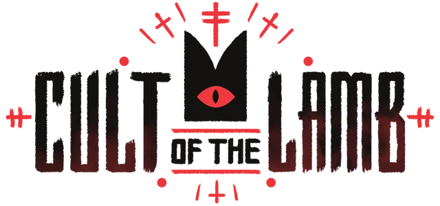
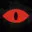
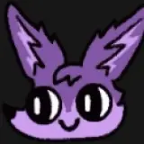
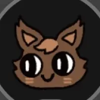

ひきこもり教だよ～
信者一覧

壁に囲まれた場所こそ、選ばれし領域。
静寂は祝福、暗がりは守護、孤独は浄化。
何も起こらぬこと、それこそが完全なる調和である。
"Tranquility of the Inner World"
教団ではじめての信者で、はじめてのウンチ職人。高齢者になったあとなぜか若返るが、その後食中毒で死んでしまう。儀式により蘇生する。

つくえと付き合っていて、子作りもした。うめしばいなりに食べられて死んだが、儀式で蘇生。教団の外にはじめてのおつかいに行って死にかける。真実に氣づこうとしている。

皮肉屋、短気、ひねくれ者の特性でとんでもない老害に。教祖が叩いたせいで怖がり特性も獲得し、突然隅っこで泣く情緒不安定信者に。

断食にみんなが怒っている中、一人だけ喜んでいた。人間として生きたいと言い、人間として死ぬことを選んだ。寿命で死んでしまった。

リスナー！ていねいな暮らししてそう。
ウンチ料理の第一人者。ウンチ料理を食べたいと言い、自らウンチ料理を食べて病気になる。ひねくれ者特性を獲得したあと、寿命で死んでしまう。

Aketokiと付き合っている。話がつまらない疑惑がある。揚旗あるふぁにウンチ料理を食べさせられて病気になる。寿命で死んでしまう。

40の若さでヨボヨボになり、教団１の短命だった。雑草料理のせいで老いるのがはやかったのではと考察されている。寿命で死ぬ前に昇天された。

Twitchチャットにより呪われてしまう。Aketokiを食べたため昇天。蘇生で呪いが解けないかと期待され蘇生されたが、まだ呪われていたためまたすぐに昇天される。

Frusumiと付き合っている。Twitchチャットの投票によって呪われてしまい、教団ではじめての悪魔になった。人間に戻った一瞬の隙に八月朔日いなりを食べる。

元配信者さん！私の幻のテスト配信を見ていた唯一の一人。スープカレーが好き。
漢気離反→信仰→反転アンチ離反→信仰としばらく忙しくしていた。呪われたdepechefulに食べられてしまう。よくお酒を飲んで酔っ払っている。

暗闇の中でこそ最大の力を発揮する建築家。誰も見ていない深夜に、呪いの石を積み上げ続ける不眠の匠。

誰も聞こえないはずの声で神の意志を届ける。その囁きは壁を越え、距離を越え、信者の夢の中にまで忍び込む。

誰も聞こえないはずの声で神の意志を届ける。その囁きは壁を越え、距離を越え、信者の夢の中にまで忍び込む。

誰も聞こえないはずの声で神の意志を届ける。その囁きは壁を越え、距離を越え、信者の夢の中にまで忍び込む。


誰も聞こえないはずの声で神の意志を届ける。その囁きは壁を越え、距離を越え、信者の夢の中にまで忍び込む。

誰も聞こえないはずの声で神の意志を届ける。その囁きは壁を越え、距離を越え、信者の夢の中にまで忍び込む。

誰も聞こえないはずの声で神の意志を届ける。その囁きは壁を越え、距離を越え、信者の夢の中にまで忍び込む。

誰も聞こえないはずの声で神の意志を届ける。その囁きは壁を越え、距離を越え、信者の夢の中にまで忍び込む。

誰も聞こえないはずの声で神の意志を届ける。その囁きは壁を越え、距離を越え、信者の夢の中にまで忍び込む。

誰も聞こえないはずの声で神の意志を届ける。その囁きは壁を越え、距離を越え、信者の夢の中にまで忍び込む。

誰も聞こえないはずの声で神の意志を届ける。その囁きは壁を越え、距離を越え、信者の夢の中にまで忍び込む。

誰も聞こえないはずの声で神の意志を届ける。その囁きは壁を越え、距離を越え、信者の夢の中にまで忍び込む。

誰も聞こえないはずの声で神の意志を届ける。その囁きは壁を越え、距離を越え、信者の夢の中にまで忍び込む。


誰も聞こえないはずの声で神の意志を届ける。その囁きは壁を越え、距離を越え、信者の夢の中にまで忍び込む。


誰も聞こえないはずの声で神の意志を届ける。その囁きは壁を越え、距離を越え、信者の夢の中にまで忍び込む。


誰も聞こえないはずの声で神の意志を届ける。その囁きは壁を越え、距離を越え、信者の夢の中にまで忍び込む。


誰も聞こえないはずの声で神の意志を届ける。その囁きは壁を越え、距離を越え、信者の夢の中にまで忍び込む。

Aketokiとつくえの子ども。顔立ちはAketoki似、色はつくえ似である。赤ちゃんにしてすでに、命の輝きがとてもまぶしい……死は終わりじゃない、と考えている。

結城ゆんと子作りするために生み出された存在。女の連絡先は全部消されている。イケメンで足が速いのでモテる。